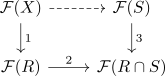

functor from grothendieck topologies to subcategories admits a left adjoint
Proposition
Let $\mathcal{C}$ be a category Then the functor $\mathrm{Sh}_{-}: \{\textrm{topologies on } \mathcal{C}\}^{\mathrm{op}} \rightarrow& \{\textrm{subcategories of } \mathcal{P}(\mathcal{C})\}$ (cf. functor from the poset of grothendieck topologies to subcategories of the presheaf category via sheaves) admits a left adjoint
In other words, for any subcategory $\mathcal{E}$, there exists a finest topology $\tau_{\mathcal{E}}$ such that $\mathcal{E} \subesteq \mathrm{Sh}_{\tau_{\mathcal{E}}}(\mathcal{C})$.
Proof
Let $R \subseteq よ(X)$ be a sieve. Then we say that $R$ is a covering sieve if and only if every presheaf in $\mathcal{E}$ satisfies descent along $f^*(R) \subseteq よ(Y)$ for any map $f: Y \rightarrow X$. Then this - if it is a well-defined grothendieck topology - is the finest topology: If $R$ is a non-covering sieve, than $\mathrm{Sh}_{\tau \cup R} \not\supseteq \mathcal{E}$ since then there exists a presheaf which does not satisfy descent for $R$, hence does not lie in $\mathrm{Sh}_{\tau \cup R}(\mathcal{C})$.
Well-defined grothendieck topology
Observe that any representable presheaf is for trivial reasons a covering sieve, since every presheaf satisfies descent for the maximal sieve. Moreover, sieves are closed under pullbacks by some glueing lemma for infinity pullbacks.
Let $R,S \subseteq よ(X)$, where $R$ is a \(\tau\)-covering sieve and assume that for all $f: Y \rightarrow X$ in $R$, $f^*(S) \subseteq よ(Y)$ is a $\tau$ covering iseev. Then we need to show that $S$ is a $\tau$ covering sieve, i.e. the dashed map is an isomorphism for all $\mathcal{F} \in \mathcal{E}$.

We show that all other there morphisms are isomorphisms:
- is a isomorphism by assumption, since $\tau$ is covering.
- furthermore, $R \cong \mathrm{colim}_{Y \in \mathrm{El}(R)} よ(Y)$ and hence $R \cap S \cong \mathrm{colim}_{Y \in \mathrm{El}(R)} よ(Y) \times_{よ(X)} S$ where we have used colimits are universal in a 1-presheaf category. hence the map is given by $\lim_{Y \in \mathrm{El}(R)} \mathcal{F}(Y) \rightarrow \mathcal{F}(よ(Y) \times_{よ(X)} S)$ which is a limit of isomorphisms, since $よ(Y) \times_{よ(X)} S \rightarrow よ(Y)$ is a covering by assupmtion for any map $f \in R$
- $S \cong \mathrm{colim}_{Y \in \mathrm{El}(S)} よ(Y)$ so the third map is $\lim_{Y \in \mathrm{El}(S)} \mathcal{F}(Y) \rightarrow \mathcal{F}(よ(Y) \times_{よ(X)} R)$, where $よ(Y) \times_{よ(X}} R \rightarrow R$ is a covering as $R \rightarrow X$ is a covering.
TODO:
- should show that $f^*(S) \rightarrow Y$ satisfies descent for an arbitrary $f: Y \rightarrow X$.